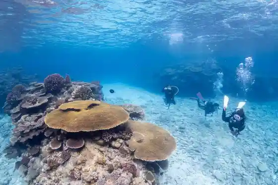
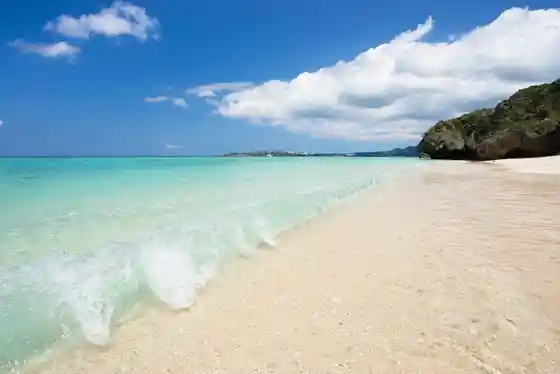

Ai Kaze
Motobu, Okinawa · 0980-47-5583 · Official / source link
feeldive
Motobu, Okinawa · 090-5742-1878 · Official / source link

Motobu Ritsu Museum
Motobu, Okinawa · 0980-47-5217 · Official / source link
Sesoko Beach
Motobu, Okinawa · 0980-47-2368 · Official / source link

Emerarudo Beach
Motobu, Okinawa · 0980-48-2741 · Official / source link
Ikoi no Eki Izumi Habu to Mangu - Susho -
Motobu, Okinawa · 0980-47-3601 · Official / source link
Jura Ki Onsen Bi Ra Umi Baths
Motobu, Okinawa · 0980-51-7300 · Official / source link
Kawai Shiisa Senmonten Maimai Shiisa
Motobu, Okinawa · 0980-48-4618 · Official / source link
Marinshoppu Mameido
Motobu, Okinawa · 090-5928-9569 · Official / source link
Yohenajisai Sono
Motobu, Okinawa · 0980-47-2183 · Official / source link
Kafe Antena
Motobu, Okinawa · 080-3040-9543 · Official / source link
Laboratorio 43pottery
Motobu, Okinawa · 0950-43-7789 · Official / source link
Motobu Tsuri Ikada
Motobu, Okinawa · 0980-47-5349 · Official / source link
Shiokawa
Motobu, Okinawa · Official / source link
Okinawa Marinsupotsu Sururu
Motobu, Okinawa · 0980-47-5708 · Official / source link
E-horizon Resort Kondominiamu Sesoko
Motobu, Okinawa · 0980-43-5229 · Official / source link
TukTukGO
Motobu, Okinawa · 0980-43-8415 · Official / source link
KARST CAMP SITE
Motobu, Okinawa · 050-6864-3379 · Official / source link
Okinawa Shiisutairu
Motobu, Okinawa · 080-8350-2754 · Official / source link
Ayuruerunesu Resort Okinawa
Motobu, Okinawa · 03-5701-1217 · Official / source link
Bi Ra Umi Aquarium Chikaku no Daibingu Shu no Ga Ringu SUP Senmonten aqua ring
Motobu, Okinawa · 0980-43-9272 · Official / source link
Tezukuri no O Mise Sesoko Shima Daibingushoppu Okinawa Club Akushisu
Motobu, Okinawa · 050-5516-8768 · Official / source link
Tokutokufotosuteshon (T-photo)
Motobu, Okinawa · 0980-43-6933 · Official / source link